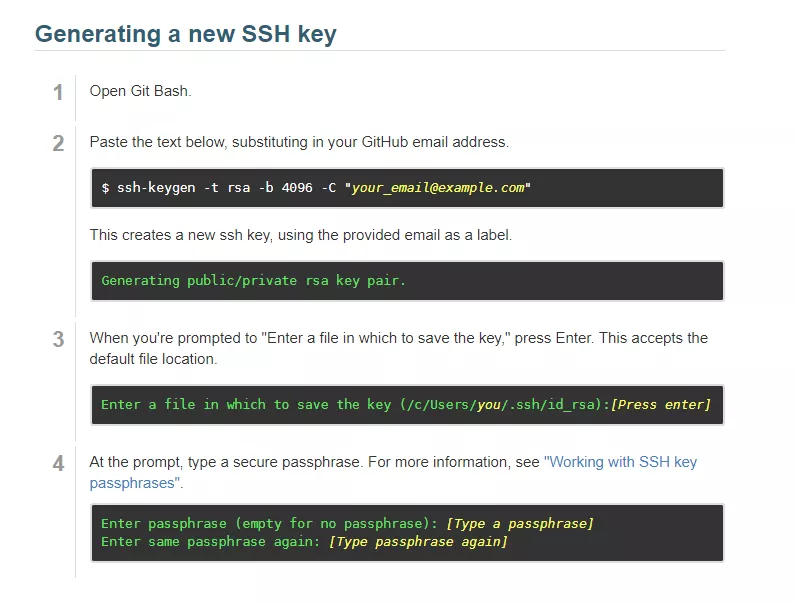
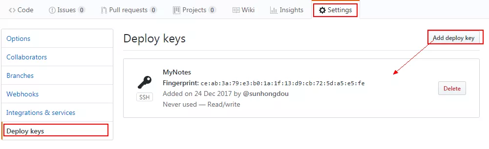

2017/12/24 14:35:13 CreatedBy Sunhongdou
1.在GitHub上注册账户，并创建一个工程
2. 安装Git-2.10.2-64-bit.exe
3. 配置git全局用户信息:
git config --global user.name "Your Name"
git config --global user.email "email@example.com"
4.生成一个SSH公钥： 参考链接
ssh-keygen -t rsa -b 4096 -C "your_email@example.com"

5.获取SSH配置到github的设置中：

6.参考链接：
git使用教程